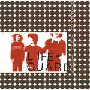
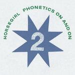

Music Reviews
-

Lifeguard Ripped & Torn
The young Chicago trio paves the way for the next generation of art punks on their scuzzed-up, yet tuneful major indie label debut LP.
Juan Edgardo Rodríguez reviews... -

SUMAC & Moor Mother THE FILM
Jazz? Metal? Poetry? Score? Through improvisation, concept, and spoken word, the avant-metal trio and activist/artist score a narrative non-visual movie.
Sean Caldwell reviews... -

Brian D’Addario Till The Morning
One half of prodigious sibling duo The Lemon Twigs goes solo.
David Coleman reviews... -

Constant Follower The Smile You Send Out Returns To You
Rewarding in its patience, the Scottish trio, led by Stephen McAll, sculpts haunting ambient folk that unlocks songwriter Stephen McAll's distressing past.
Juan Edgardo Rodríguez reviews... -
MIKE Showbiz!
Brooklyn rapper MIKE takes another step forward on one of Janaury's strongest Hip Hop releases.
David Coleman reviews... -

Horsegirl Phonetics On and On
On their second LP, the Chicago indie rock trio craves a minimalistic vision that reveals an unassuming side to their music.
Juan Edgardo Rodríguez reviews... -
Benjamin Booker LOWER
Nearly eight years from his last effort, the New Orleans-based singer-songwriter's third full-length album feels like a new beginning.
Juan Edgardo Rodríguez reviews... -
Jasmine.4.t You Are The Morning
Jasmine.4.t's debut is a warm folk-inflected affair with a heavy focus on trans identity.
David Coleman reviews... -
Ela Minus DÍA
The Brooklyn-via-Columbia delivers swift, euphoric pleasures that engage both the head and the heart.
Juan Edgardo Rodríguez reviews... -

Lambrini Girls Who Let The Dogs Out
This is nothing to do with the Baha Men.
David Coleman reviews...